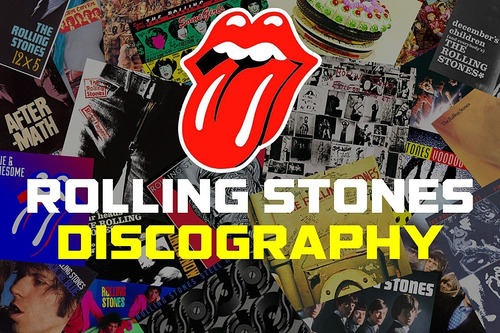

👄BEST ALBUMS EVER👄
😱The Rolling Stones😱

STUDIO ALBUMS
- "The Rolling Stones"(1964)
- "12 x 5"(1964)
- "The Rolling Stones No.2"(1965)
- "The Rolling Stones, Now!"(1965)
- "Out Of Our Heads"(1965)
- "December's Children"(1965)
- "Aftermath"(1966)
- " Between The Buttons"(1967)
- "Their Satanic Majesties Request"(1967)
- "Beggars Banquet"(1968)
- "Let It Bleed"(1969)
- "Sticky Fingers"(1971)
- "Exile on Main St."(1972)
- "Goats Head Soup"(1973
- "It's Only Rock 'n' Roll"(1974)
- "Black and Blue"(1976)
- "Some Girls"(1978)
- "Emotional Rescue"(1980)
- "Tattoo You"(1981)
- "Undercover"(1983)
- "Dirty Work"(1986)
- "Steel Wheels"(1989)
- "Voodoo Lounge"(1994)
- "Bridges to Babylon"(1997)
- "A Bigger Bang"(2005)
- "Blue & Lonesome"(2016)
LIVE ALBUMS
- "Got Live If You Want It!"(1966)
- "Get Yer Ya-Ya's Out! The Rolling Stones in Concert"(1970)
- "Love You Live"(1977)
- "Still Life"(American Concert 1981)(1983)
- "Flashpoint"(1991)
- "Stripped"(1995)
- "Rock and Roll Circus"(1996)
- "No Security"(1998)
- "Live Licks"(2004)
- "Shine a Light"(2008)
- "Brussels Affair"(Live 1973)(2011)
- "Muddy Waters & The Rolling Stones Live at the Checkerboard Lounge, Chicago 1981"(2012)
- "Live at the Tokyo Dome"(2012)
- "Light the Fuse"(2012)
- "Live at Leeds"(2012)
- "Hyde Park Live - Sweet Summer Sun"(2013)
- "Marquee Club"(Live 1971)(2015)
- "Sticky Fingers Live"(2015)
- "Totally Stripped"(2016)
- "Havana Moon"(2016)
- "Rolling Stones On Air"(2017)
COMPILATION ALBUM
- "Big Hits" (High Tide and Green Grass)(1966)
- "Flowers"(1967)
- "Through the Past, Darkly" (Big Hits Vol. 2)(1969)
- "Stone Age"(1971)
- "Gimme Shelter"(1971)
- "Hot Rocks 1964-1971"(1971)
- "Milestones"(1972)
- "Rock 'n' Rolling Stones"(1972)
- "More Hot Rocks"(Big Hits & Fazed Cookies)(1972)
- "No Stone Unturned"(1973)
- "Metamorphosis"(1975)
- "Made in the Shade"(1975)
- "Rolled Gold: The Very Best of the Rolling Stones"(1975)
- "Time Waits for No One"(1979)
- "Solid Rock"(1980)
- "Slow Rollers"(1981)
- "Sucking in the Seventies"(1981)
- "Rewind (1971-1984)"(1984)
- "Singles Collection: The London Years"(1989)
- "Jump Back: The Best of The Rolling Stones"(1993)
- "Forty Licks"(2002)
- "Rarities 1971-2003"(2005)
- "Exile On Main St.(Rarities Edition)(2010)
- "GRRR!"(2012)
Volver al inicio